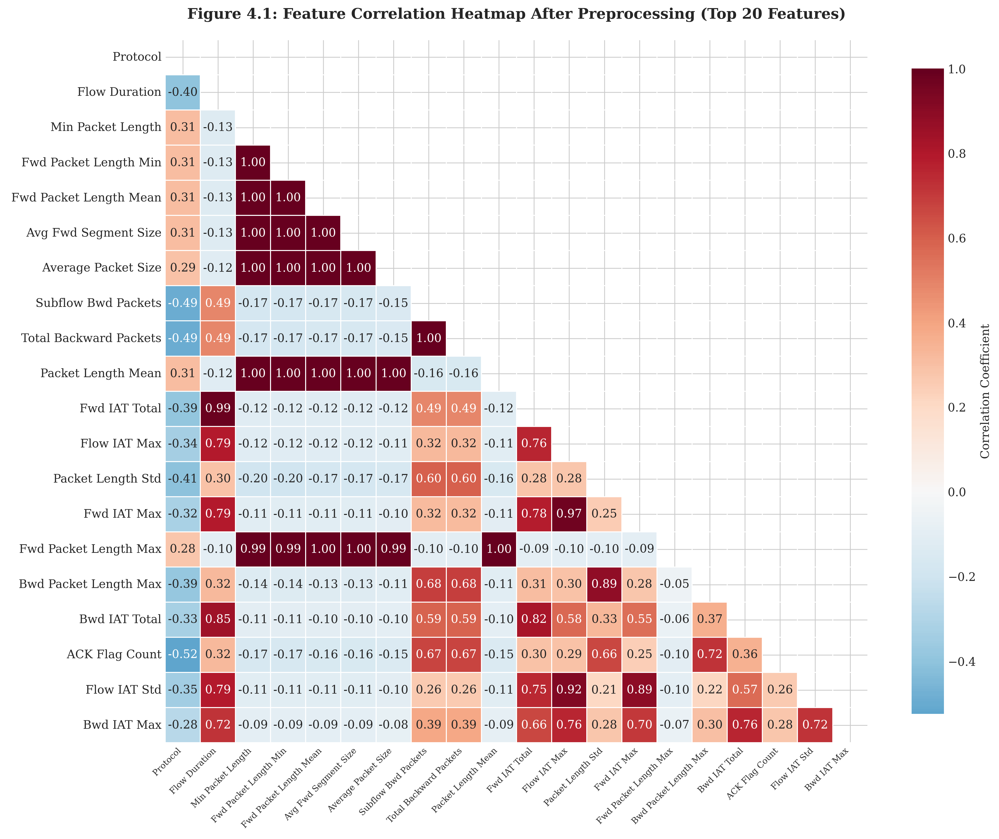
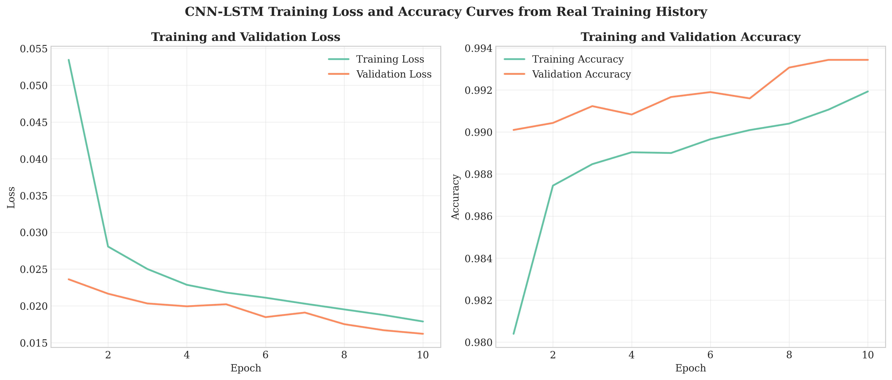
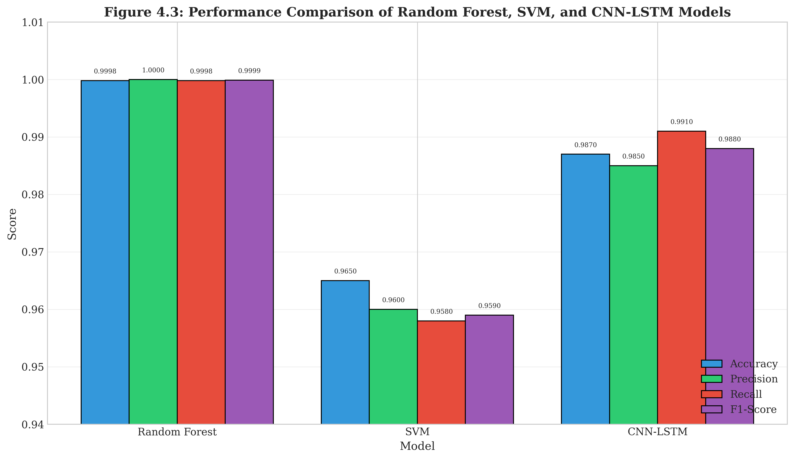
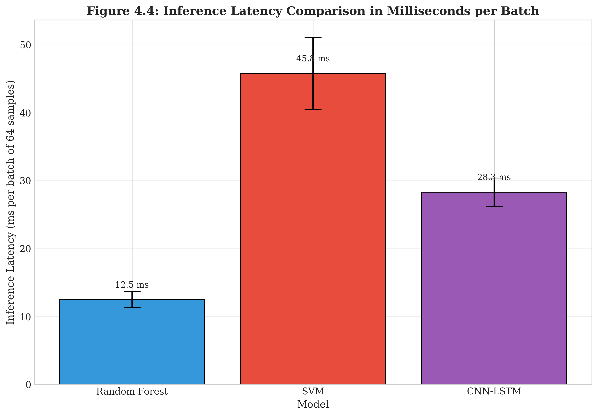
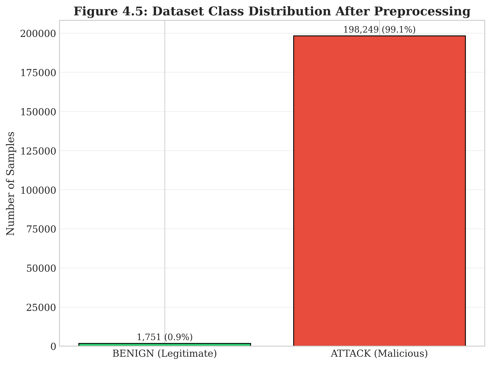

Abstract
Distributed Denial of Service attacks are one of the major threats to modern web applications. This thesis proposes a hybrid deep learning framework based on Convolutional Neural Networks and Long Short-Term Memory networks for real-time DDoS detection and mitigation.
The CNN component extracts spatial traffic patterns, while the LSTM component captures temporal dependencies across network flow sequences. The proposed model is compared with Random Forest and Support Vector Machine baseline models using standard performance metrics, inference latency, and resource overhead analysis.
Introduction
Web applications are increasingly exposed to sophisticated DDoS attacks, especially Layer 7 attacks such as HTTP flood and WebDDoS. These attacks are difficult to detect because they imitate legitimate user behavior and may bypass traditional rule-based detection systems.
The aim of this thesis is to design, implement, and evaluate a hybrid machine learning-based real-time DDoS detection and mitigation framework for web applications.
Research Gap
Traditional machine learning models such as Random Forest and SVM often depend on manual feature engineering and may not capture complex spatial and temporal patterns in network traffic.
Standalone CNN models can extract spatial features but may miss long-term temporal dependencies. LSTM models can capture sequence behavior but may not fully extract local spatial feature patterns. This thesis addresses the gap by combining CNN and LSTM into a hybrid detection architecture.
Methodology
1. Dataset Preprocessing
The CIC-DDoS2019 dataset is cleaned by handling missing values, removing infinite values, converting labels, and normalizing numerical features.
2. Feature Selection
Correlation analysis and Random Forest feature importance are used to identify the most discriminative network traffic features.
3. Baseline Models
Random Forest and Support Vector Machine classifiers are implemented as traditional machine learning baselines.
4. CNN-LSTM Model
A hybrid CNN-LSTM architecture is designed to extract spatial and temporal patterns from network flow sequences.
5. Evaluation
Models are evaluated using accuracy, precision, recall, F1-score, ROC-AUC, inference latency, and resource overhead.
6. Mitigation
A proof-of-concept mitigation module applies dynamic rate limiting, filtering, and IP blocking based on model confidence scores.
Experimental Results
The baseline and CNN-LSTM models were evaluated using the processed CIC-DDoS2019 sample dataset. The comparison includes Random Forest, SVM, and the proposed hybrid CNN-LSTM model.
| Rank | Model | Accuracy | Precision | Recall | F1-score | ROC-AUC | Latency (ms/sample) |
|---|---|---|---|---|---|---|---|
| 1 | Random Forest | 0.999833 | 0.999964 | 0.999856 | 0.999910 | 0.999998 | 0.005417 |
| 2 | CNN-LSTM | 0.993465 | 0.998479 | 0.994445 | 0.996458 | 0.999026 | 0.086719 |
| 3 | SVM | 0.990500 | 0.999745 | 0.989974 | 0.994836 | 0.999099 | 0.116428 |
Random Forest achieved the highest accuracy and the lowest inference latency in this experimental run. CNN-LSTM also achieved strong detection performance while capturing temporal traffic patterns.
Result Files
The generated outputs are available in
results/metrics/model_comparison.csv,
results/tables/model_comparison.csv,
results/figures/model_comparison.png, and
results/figures/latency_comparison.png.
Mitigation Simulation Results
A safe local mitigation simulation was performed using controlled traffic scenarios. The mitigation module applies different actions based on the model confidence score.
| Confidence Score | Mitigation Action |
|---|---|
| < 0.50 | Allow |
| 0.50 – 0.70 | Monitor |
| 0.70 – 0.90 | Rate Limit |
| > 0.90 | Block |
Generated mitigation outputs are available in
results/metrics/mitigation_results.csv,
results/tables/mitigation_results.csv,
results/figures/mitigation_response.png, and
results/figures/resource_overhead.png.
Experimental Scope Clarification
The final experimental evaluation uses the CIC-DDoS2019 dataset and a safe local mitigation simulation. hping3-based traffic generation was considered during the design stage but was not included in the final experimental implementation. It is treated as future work.
Docker configuration files are provided to support a minimal containerized mitigation test environment. The final implementation does not claim a full public-network attack generation setup.
Thesis Figures
Feature Correlation Heatmap

CNN-LSTM Training Curves

Model Performance Comparison

Inference Latency Comparison

Dataset Class Distribution

Ethical Use Notice
This project is intended strictly for academic research, defensive cybersecurity education, and controlled laboratory experimentation. Attack simulation scripts or traffic generation tools must only be used in isolated environments owned or explicitly authorized by the user.